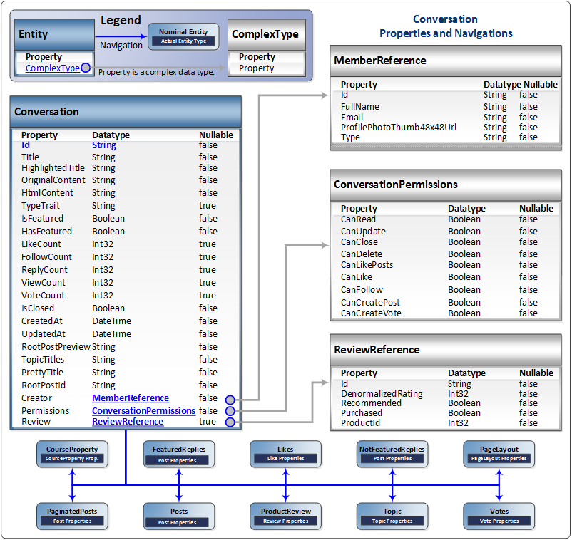

This section documents SAP Jam Communities SAP Jam Communities API calls that involve Conversations.

The Conversation entity
Purpose: The Conversation entity provides information on an exchange between
one or more Members about a specific topic (product).
Properties: The Conversation properties are:
- Id: [String] The unique
ID of the Conversation.
- Title: [String] The title given to the Conversation by its creator.
- HighlightedTitle: [String] The title set if the Conversation was
highlighted.
- OriginalContent: [String] The first post that the creator of the
Conversation wrote.
- HtmlContent: [String] The HTML content of the Conversation.
- TypeTrait: [String] The type of the Conversation.
- IsFeatured: [Boolean] True if the Conversation is featured.
- HasFeatured: [Boolean] True if the Conversation was ever featured.
- LikeCount: [Int32] A count of the "likes" that the Conversation has
received.
- FollowCount: [Int32] A count of the number of members who are following
the Conversation.
- ReplyCount: [Int32] A count of the number of replies that the
Conversation has received.
- ViewCount: [Int32] A count of the number of views that the Conversation
has received.
- VoteCount: [Int32] A count of the number of votes that the Conversation
has received.
- IsClosed: [Boolean] True if the Conversation has been closed by a
moderator.
- CreatedAt: [DateTime] The date and time that the Conversation was
created.
- UpdatedAt: [DateTime] The date and time that the Conversation was last
modified.
- RootPostPreview: [String] The preview content of the initial post of the
Conversation.
- TopicTitles: [String] The titles (tags) that have been set for the
Conversation.
- PrettyTitle: [String] The title set by a moderator for the
Conversation.
- RootPostId: [String] unique
ID of the initial post of the Conversation.
- Creator: [ComplexType] MemberReference data on the Member that created
the Conversation.
- Permissions: [ComplexType] ConversationPermissions data on the
permissions set for this Conversation.
- Review: [ComplexType] ReviewReference data about a review of this
Conversation.
Navigations: The Conversation entity provides navigations to:
- CourseProperty: [CourseProperty] to provide access to information on the
CourseProperty that the specified Conversation is associated with, if it is
related to a course.
- FeaturedReplies: [Post] to provide access to information on the replies
that have been featured in the specified Conversation.
- Likes: [Like] to provide access to information on the Likes that the
specified Conversation has received.
- NotFeaturedReplies: [Post] to provide access to information on the
replies to the specified Conversation that were not featured.
- PageLayout: [PageLayout] to provide access to information on the
PageLayout set for the specified Conversation.
- PaginatedPosts: [Post] to provide access to information on the pagination
data for the specified Conversation.
- Posts: [Post] to provide access to information on the various Posts of
the specified Conversation.
- ProductReview: [Review] to provide access to information on the
ProductReview data, if set, for the specified Conversation.
- Topic: [Topic] to provide access to information on the Topic that the
specified Conversation is about.
- Votes: [Vote] to provide access to information on the Votes cast for the
specified Conversation.